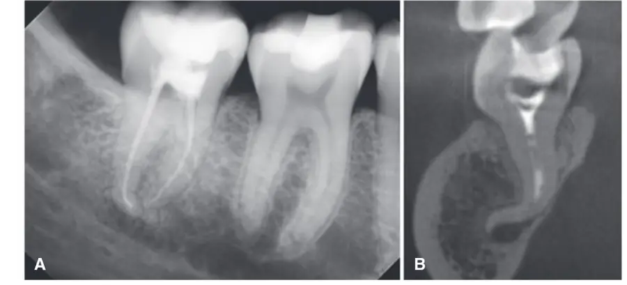

نسخه استخراجشده؛ ترجمه یا تأیید علمی انجام نشده است. وضعیت: captured
قدم 1 · theory
پیش از شروع مرور
این یک آزمون است، نه یک درس. ۳۹ سؤال از هر چهار درس یونیت ۱ — ولی از زاویههای تازه.

نزدیکی آپکس ریشه به ساختارهای مجاور روی پریاپیکال (White & Pharoah. Oral Radiology, 9th ed. — Fig. 13.4)
ستونفقرات یونیت را یک بار مرور کن:
رادیودنسیتی = تضعیف. مینا ≈۹۶٪ مینرال (متراکمترین بافت بدن)، عاج ≈۷۵٪ و همتراز استخوان، سمان ۵۰ تا ۶۰٪ ولی به دلیل کنتراست کم و ضخامت کم دیده نمیشود.
سرویکال برناوت آناتومیک است، در تقریباً همهی دندانها انتظار میرود، و نشانهی افتراقیاش سالم بودن لبهی سطح پروگزیمال است.
کانال در آخرین ≈۱ میلیمتر ممکن است دیده نشود و این نرمال است، دو فورامن شناسایینشده = شکست اندو، کانالهای جدا روی اگزیال، مسیرشان روی کرونال و ساژیتال.
عاج ثانویه از آپیکال به کرونال پیش میرود، پاپیلای دندانی با کریپت کورتیکال نازک احاطه شده و ضایعه نیست.
لامینا دورا مادهی متراکمتری نیست؛ اثر پوستهی تخممرغ است و به زاویهی پرتو وابسته، بودنش به حیات پالپ اشاره میکند، ولی نبودنش میتواند نرمال باشد.
PDL در میانهی ریشه نازکترین است (فولکروم)، نازک در دندان مدفون و بدون آنتاگونیست، ولی عکسش صادق نیست، PDL دوتایی = دو ارتفاع کانتور، کلاسیک در مزیالِ مولر اول و دوم مندیبل.
کرست آلوئولار ۰٫۵ تا ۲ میلیمتر آپیکالتر از CEJ، گرد شدن زاویهی تیزِ اتصال با لامینا دورا نشانهی بیماری، نبودن کورتکس بین انسیزورها مشکوک، در خلفی نرمال.
ترابکول: ماگزیلا ریز و پرشمار، مندیبل درشتتر، افقیتر، فضاهای بزرگتر، زیر مولر پایین ممکن است تقریباً بیترابکول باشد، روال چهارگامی افتراق تنکی از بیماری.
سؤالهای این مرور سختترند. بسیاری دو مفهوم را از دو درس متفاوت به هم میدوزند، یا گزینهای دارند که نتیجهاش درست ولی استدلالش غلط است. عجله نکن.
قدم 2 · question
روی یک رادیوگرافی دوبعدی، هر ساختاری که به گیرنده نزدیکتر باشد روشنتر ثبت میشود.
۰۱
صحیح
۰۲
غلط
قدم 3 · question
مینا متراکمترین مادهی ............ موجود در بدن است.
حروف را به ترتیب درست لمس کنید
ب
ی
ط
ع
ی
نوع سؤال: ساخت کلمه · 5 خانه
حروف منبع: ب · ی · ط · ع · ی
قدم 4 · question
سرویکال برناوت میان کدام دو مرز آناتومیک ظاهر میشود؟
۰۱
اتصال مینا-عاج و سقف اتاقک پالپ
۰۲
کرست ریج آلوئولار و فورکاسیون ریشهها
۰۳
لبهی کلاهک مینا و کرست ریج آلوئولار
۰۴
کرست ریج آلوئولار و آپکس ریشه
قدم 5 · question
در دندانی که کانالش در آخرین یک میلیمتر دیده نمیشود، کانال ممکن است کجا از دندان خارج شود؟
۰۱
از کنار ریشه، کمی قبل از آپکس رادیوگرافیک
۰۲
دقیقاً در نوک آپکس رادیوگرافیک و همیشه در امتداد محور کانال
۰۳
در ناحیهی فورکاسیون، از راه کف اتاقک پالپ
۰۴
در ناحیهی سرویکال، از راه کانالهای اکسسوری تاجی
قدم 6 · question
آناتومی دندان و پریودنشیوم روی اسکنهای CBCT با میدان دید محدود، بهتر از اسکنهای با میدان دید متوسط و کامل نمایش داده میشود.
۰۱
صحیح
۰۲
غلط
قدم 7 · question
در بیمار مسنی اتاقک و کانالها بهطور یکنواخت باریک شدهاند و هیچ محرک پاتولوژیکی در تصویر نیست. محتملترین توضیح و جهت این فرایند چیست؟
۰۱
رسوب عاج ثالثیه در پاسخ به بار اکلوزال، که از سقف اتاقک آغاز شده و به آپیکال رسیده است
۰۲
رسوب عاج ثانویهی مرتبط با سن، که از آپیکال به سمت کرونال پیش رفته است
۰۳
کلسیفیکاسیون دیستروفیک پس از ایسکمی پالپ، که همزمان در همهی سطوح رخ میدهد
۰۴
رزورپشن جایگزینی که فضای پالپ را با استخوان پر کرده و مرزهایش را محو کرده است
قدم 8 · question
در انتهای ریشهی در حال تشکیل، کانال پالپ و دیوارههای ریشه چه شکلی دارند؟
۰۱
کانال همگرا میشود و دیوارهها در انتها بهتدریج ضخیمتر و گردتر میشوند
۰۲
کانال واگراست و دیوارهها بهسرعت تا لبهای چاقویی باریک میشوند
۰۳
کانال با ضخامت ثابت ادامه مییابد و دیوارهها در یک صفحهی صاف قطع میشوند
۰۴
کانال در چند شاخه تقسیم میشود و هر شاخه فورامن جداگانهای میسازد
قدم 9 · question
وجود لامینا دورای دستنخورده پیرامون آپکس قویاً به حیات پالپ اشاره میکند، ولی غیبت آن الزاماً معنایی ندارد.
۰۱
صحیح
۰۲
غلط
قدم 10 · question
در مزیال ریشهی مولر دوم مندیبل دو نوار PDL موازی میبینی. کدام اقدام درست است؟
۰۱
دندان از نظر ترومای اکلوزال بررسی و در صورت تأیید، تنظیم اکلوزال انجام شود
۰۲
CBCT با میدان دید محدود درخواست شود تا احتمال ریشهی اضافهی باکال یا کانال جداگانه بررسی شود
۰۳
یافته بهعنوان واریاسیون هندسی ثبت شود و هیچ اقدام تشخیصی یا درمانی افزودهای لازم نیست
۰۴
پریاپیکال با زاویهی عمودی متفاوت تکرار شود تا دو نوار روی هم بیفتند، یکی شوند و تشخیص قطعی شود
قدم 11 · question
در یک بایتوینگ، فاصلهی کرست تا CEJ حدود ۱٫۵ میلیمتر است ولی اتصال کرست با لامینا دورا گرد شده. درستترین برداشت کدام است؟
۰۱
چون ارتفاع در محدودهی نرمال است، شکل اتصال ارزش تشخیصی ندارد و یافته نرمال گزارش میشود
۰۲
ارتفاع کرست نرمال است ولی گرد شدن آن زاویه نشانگر بیماری پریودنتال است
۰۳
گرد شدن زاویه در این فاصله همیشه ناشی از زاویهی عمودی نادرست کلیشه است
۰۴
فاصلهی ۱٫۵ میلیمتر خودش غیرطبیعی است و مستقل از شکل زاویه باید گزارش شود
ترابکولهای ضخیم و پرشمار با جهتگیری عمودی، و فضاهای مغز بسیار کوچک
۰۲
ترابکولهای ضخیم و کمشمار با جهتگیری افقی، و فضاهای مغز بزرگ
۰۳
ترابکولهای نازک و کمشمار با الگویی پراکنده و نامنظم، و فضاهای مغز بسیار بزرگ
۰۴
ترابکولهای نازک و پرشمار با الگویی ریز و دانهای و متراکم، و فضاهای مغز کوچک
قدم 13 · question
چرا در ارزیابی تنکی ترابکولار، تکرار معاینه با اکسپوزر کاهشیافته پیشنهاد میشود؟
۰۱
چون ممکن است الگوی تنکی را آشکار کند که در پروجکشن نخست بیشنوردیده و سوخته بود
۰۲
چون کاهش اکسپوزر کنتراست را بالا میبرد و مرز ضایعات را تیزتر میکند
۰۳
چون دوز کمتر در بیمار بیعلامتی که کلیشهی قبلی ندارد، از نظر اخلاقی تنها گزینهی قابل توجیه است
۰۴
چون اکسپوزر کمتر نویز تصویر را کاهش میدهد و ترابکولهای ظریف را از زمینهی مغز جدا میکند
قدم 14 · question
بیماری برای ارزیابی پیش از ایمپلنت در ناحیهی کانین ماگزیلا مراجعه کرده و روی پریاپیکال، صفحهی باکال قابل تشخیص نیست. درستترین برداشت و اقدام کدام است؟
۰۱
ندیدن صفحهی باکال از نظر بالینی بیاهمیت است، چون در برنامهریزی ایمپلنت تنها ارتفاع استخوان تا کف بینی تعیینکننده است و ضخامت باکولینگوال در انتخاب قطر فیکسچر نقشی ندارد
۰۲
ندیدن صفحهی باکال نشاندهندهی دهیسنس گسترده است و باید پیش از ایمپلنت پیوند استخوان برنامهریزی شود
۰۳
پریاپیکال با زاویهی عمودی بیشتر تکرار شود تا صفحهی باکال از روی ریشه جدا و آشکار گردد
۰۴
ندیدن صفحهی باکال روی پریاپیکال یافتهی مورد انتظار است چون این استخوان اغلب نازک است؛ برای ارزیابی ضخامت و نقصهای آن باید تصویربرداری مقطعی انجام شود